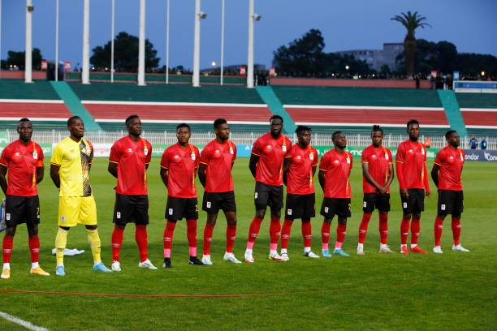
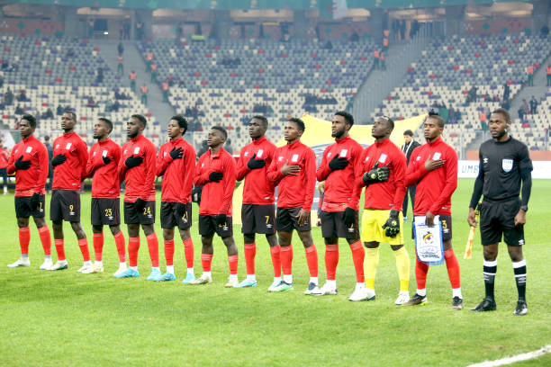
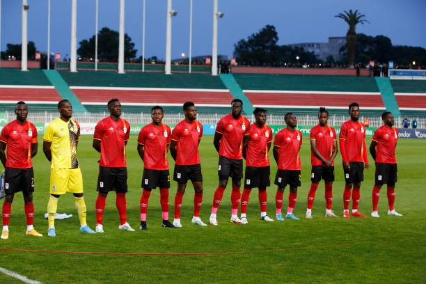
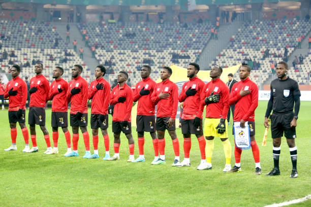

The Uganda national football team represents Uganda in association football and is controlled
by the Federation of Uganda Football Associations. Wikipedia
Head coach: Paul Put
Arena/Stadium: Mandela National Stadium, Namboole
Founded: 1924
Association: Federation of Uganda Football Associations (FUFA)
Captain: Isaac Muleme
Current: 94
FIFA code: UGA
 


